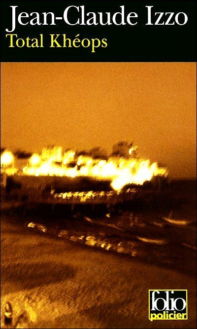

<html>

<head>
    <meta charset="utf-8" />
    <meta name="viewport" content="width=device-width, initial-scale=1.0">

    <!-- Leaflet -->
    <link rel="stylesheet" href="https://unpkg.com/leaflet@1.7.1/dist/leaflet.css"
        integrity="sha512-xodZBNTC5n17Xt2atTPuE1HxjVMSvLVW9ocqUKLsCC5CXdbqCmblAshOMAS6/keqq/sMZMZ19scR4PsZChSR7A=="
        crossorigin="" />
    <script src="https://unpkg.com/leaflet@1.7.1/dist/leaflet.js"
        integrity="sha512-XQoYMqMTK8LvdxXYG3nZ448hOEQiglfqkJs1NOQV44cWnUrBc8PkAOcXy20w0vlaXaVUearIOBhiXZ5V3ynxwA=="
        crossorigin=""></script>
    <style>
        #map { height: 800px; }
    </style>
</head>

<body>
    <div id="map"></div>
    <script>
        var map = L.map('map').setView([41.131, 19.775], 5);
        map.options.minZoom = 4;
        //map.options.maxZoom = 6;

L.tileLayer('https://{s}.tile.openstreetmap.org/{z}/{x}/{y}.png', {
    attribution: '&copy; <a href="https://www.openstreetmap.org/copyright">OpenStreetMap</a> contributors'
}).addTo(map);

// Paris
L.marker([48.8546, 2.347]).addTo(map)
    .bindPopup('<a href="https://cartomedit.hypotheses.org/paris"></a>')

// Marseille
L.marker([43.2971, 5.3683]).addTo(map)
    .bindPopup('<a href="https://cartomedit.hypotheses.org/marseille-2"></a><a href="https://cartomedit.hypotheses.org/marseille-2"></a><a href="https://cartomedit.hypotheses.org/marseille-2"></a><a href="https://cartomedit.hypotheses.org/marseille-2"></a><a href="https://cartomedit.hypotheses.org/marseille-2"></a>')

// Barcelone
L.marker([41.3915, 2.18041]).addTo(map)
    .bindPopup('<a href="https://cartomedit.hypotheses.org/barcelone-2"></a>')
    
// Cagliari
L.marker([39.2116, 9.1185]).addTo(map)
    .bindPopup('<a href="https://cartomedit.hypotheses.org/cagliari"></a>')

// Oran
L.marker([35.7027, -0.6386]).addTo(map)
    .bindPopup('<a href="https://cartomedit.hypotheses.org/oran-2"></a>')

// Le Caire
L.marker([30.0527, 31.2393]).addTo(map)
    .bindPopup('<a href="https://cartomedit.hypotheses.org/le-caire"></a>')

// Beyrouth
L.marker([33.8923, 35.4788]).addTo(map)
    .bindPopup('<a href="https://cartomedit.hypotheses.org/"></a>')

// Beyrouth - 2
L.marker([33.8908,35.4970]).addTo(map)
    .bindPopup('<a href="https://cartomedit.hypotheses.org/"></a>')

// Procida
L.marker([40.7649,14.0241]).addTo(map)
    .bindPopup('<a href="https://cartomedit.hypotheses.org/"></a>')

// Marrakech
L.marker([31.6330,-7.9908]).addTo(map)
    .bindPopup('<a href="https://cartomedit.hypotheses.org/"></a>')

    </script>
</body>

</html>
